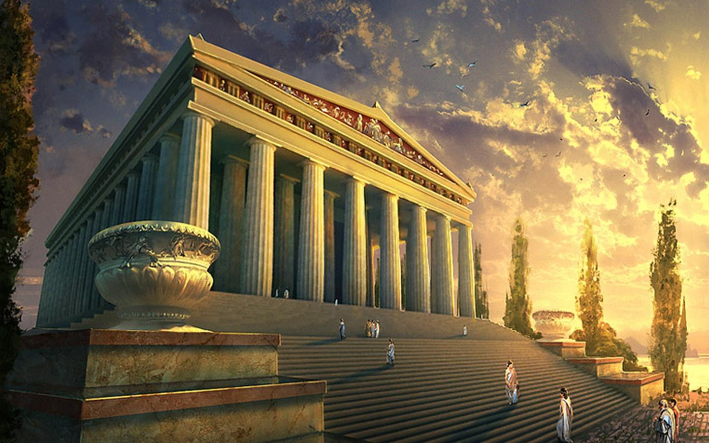

Znana pod nazwą Artemizjonu stanowiła największą ozdobę Efezu w Azji Mniejszej (obecnie Turcja).
Była to świątynia o wymiarach 130 m na 69 m, zbudowana na rozkaz króla Lidii Krezusa około 560 p.n.e. Najprawdopodobniej stanęła na miejscu wcześniejszej budowli zniszczonej podczas najazdu Kimmerów (zdaniem Pliniusza świątynia była dziewięć razy budowana i burzona). Jońska świątynia została zaprojektowana przez Chersifrona i Metagenesa z Knossos, przy współpracy Teodorosa z Samos. Do jej budowy użyto doskonałej jakości marmuru i cedru libańskiego. Świątynia została zaprojektowana jako dipteros otoczony podwójną kolumnadą złożoną z ośmiu kolumn przed elewacją frontową i tylną (tzw. oktastylos) i dwudziestu kolumn wzdłuż boków świątyni. Pozostałe kolumny, a było ich w sumie 117, umieszczono w pronaosie i wewnątrz świątyni. Kolumny o wysokości ok. 18,0 m miały średnicę w dolnej części 2,5 m. Zdobiły je w dolnej części płaskorzeźby. Rzeźby zdobiły także fryz i najprawdopodobniej tympanon oraz dach świątyni. W jej wnętrzu umieszczono cedrowy posąg Artemidy. Wśród rzeźbiarzy zaangażowanych do prac przy budowie znaleźli się między innymi: Fidiasz, Poliklet, Kresilas. Ukończenie budowli zajęło 120 lat.
W 356 p.n.e. świątynię spalił szewc Herostrates w nadziei, że ten występek unieśmiertelni jego imię. Świątynię chciał odbudować Aleksander Wielki. Mieszkańcy Efezu nie przyjęli jego warunku, jakim było umieszczenie w świątyni inskrypcji sławiących jego imię. Propozycja została odrzucona słowami: „Aleksandrze, nie wypada, żeby jeden bóg stawiał świątynię drugiemu bogu”, bowiem wyznawcy Artemidy nie widzieli możliwości oddawania w jednej świątyni hołdu dwóm bogom. Aleksander, mimo iż nie przyjęto od niego pieniędzy na pokrycie kosztów odbudowy, zlecił swojemu architektowi, Dejnokratesowi, sporządzenie projektu świątyni. Koszt prac został sfinansowany ze składek mieszkańców Efezu i z kwot uzyskanych ze sprzedaży niektórych, niewykorzystanych przy odbudowie elementów spalonej świątyni. Odbudowa świątyni trwała od 334 p.n.e. do 260 p.n.e. Budowla stanęła na fundamentach poprzedniej świątyni i miała identyczne z nią wymiary. Dodano nową krepidomę złożoną z 13 stopni. Przy odbudowie pracowali Skopas, który wykonał płaskorzeźby w dolnej części kolumn, Praksykles i Apelles.
Świątynia z III wieku została zniszczona podczas najazdu Gotów w roku 262 i już nigdy jej nie odbudowano.
W roku 1869 ekspedycja zorganizowana przez British Museum odkryła miejsce, gdzie znajdowała się świątynia. Niektóre elementy wystroju efeskiego Artemizjonu można obecnie obejrzeć w tym muzeum.
Oryginalny posąg Artemidy, niezachowany, wykonany był ze złota, srebra, kości słoniowej, drewna hebanowego i czarnego kamienia (chryzelefantyna). Można się jedynie domyślać, jak wyglądał, na podstawie opisów i zachowanej kopii. Uwagę zwraca niezwykły sposób przedstawienia bogini, przypominający bardziej rzeźby egipskie, niż greckie.
Artemida, której cześć oddawano w Efezie, przyjęła wiele cech frygijskiej bogini Kybele. Kult bogini – matki opiekującej się ziemią, powietrzem i wodą, dającej życie i urodzaj, a jednocześnie rządzącej cywilizacją, był rozpowszechniony w Anatolii jeszcze przed przybyciem greckich kolonistów. Wraz z powstawaniem miast jońskich i wzajemnym przenikaniem się kultur, Artemida została najważniejszą boginią Jonii. W Efezie każdego roku w maju odbywały się trwające przez cały miesiąc obchody ku jej czci.
Efeskie posągi Artemidy przedstawiają ją ubraną w suknię ozdobioną miejskimi wieżami, które są atrybutem jej władzy nad cywilizacją. Ozdoby z wyobrażeniami zwierząt są symbolem jej władzy nad nimi. Efeska Artemida nazywana była też Pszczelą Boginią, a bite w mieście monety na awersie miały symbol bogini – wizerunek królowej pszczół.

Prawdopodobny wygląd Artemizjonu

Tak wyglądają teraz ruiny świątyni